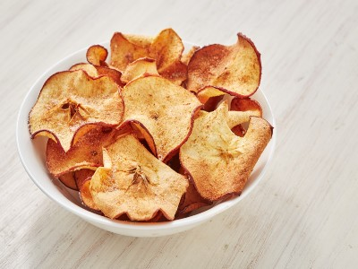

|  |
Food's name: Thinly sliced cinnamon apple▸ Ingredients:
▸ Time to prepare: 30 minutes ▸ Approx quantity: 1 medium plate |
▸ Detailed recipe:
- Thinly slice apples, then put apple juice in a pot (about 2 cups) with 1 cinnamon stick.
Boil for 5 minutes until the apple slices turn light golden, then arrange the apple slices
on a cake rack. Bake for 30 minutes at 250°C.
- The final product is a "healthy" apple cinnamon "snack" that is healthy, mild in taste,
easy to eat, and not greasy, suitable for all family members.
=>
▸ Calories and related information: